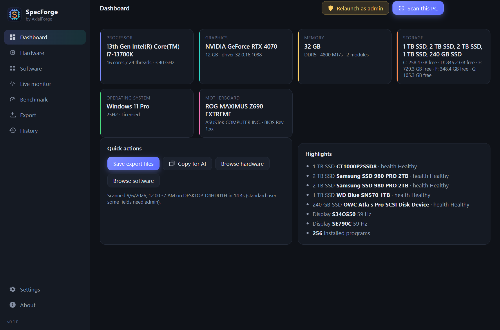
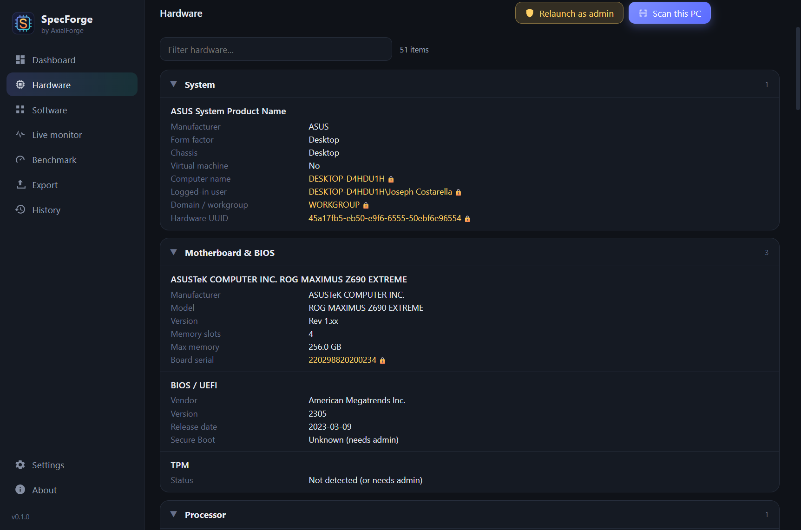
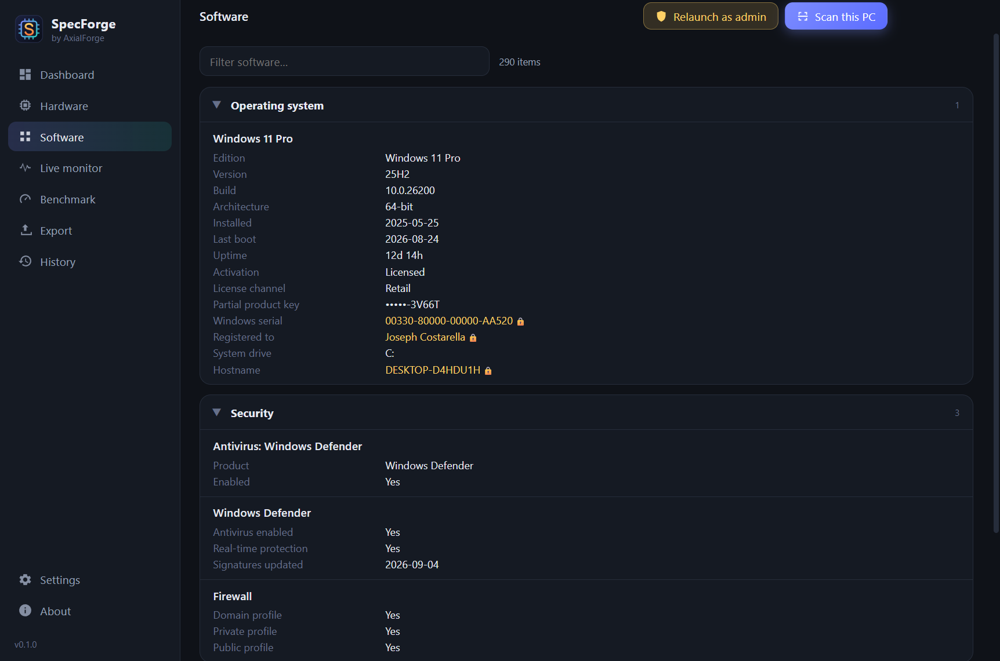
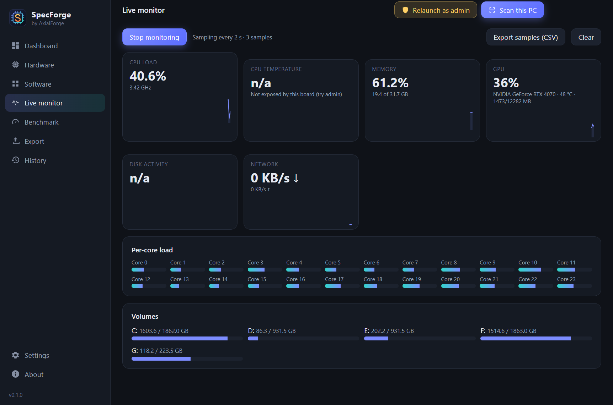
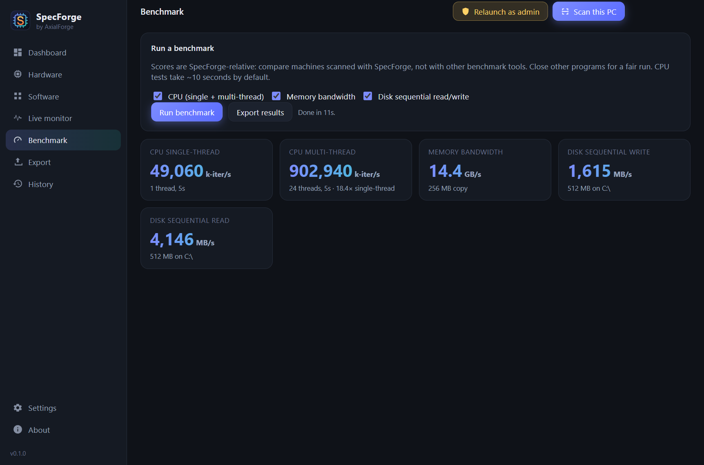
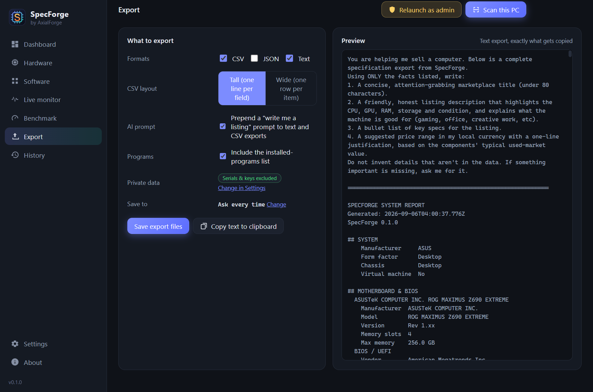
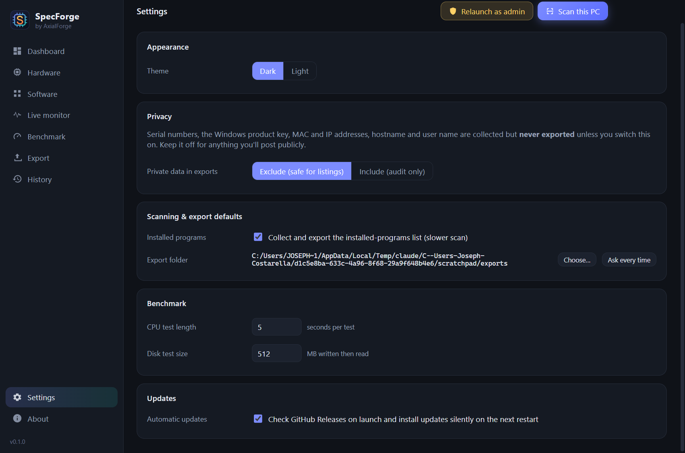

SpecForge
Forge a spec sheet from any PC.
SpecForge reads a Windows PC's hardware and software, shows it on one dashboard, and exports it as CSV, JSON or plain text. Paste the export into ChatGPT, Claude or Gemini and it can write your eBay or marketplace listing for you, or keep the file as an audit record of exactly what the machine contained on that date. Nothing is uploaded anywhere.

What it does
- Full hardware scan: CPU, every RAM module, GPUs, displays (native resolution), drives with health, volumes, network, battery, USB, audio, TPM and Secure Boot.
- Software scan: Windows edition/version/activation, security status, installed programs, recent updates, startup programs.
- Export as tall or wide CSV, JSON and text, with an optional "write me a listing" prompt, or copy straight to the clipboard.
- Private data (serials, product key, MAC/IP, hostname, user) is excluded from exports unless you switch it on for an audit.
- Live monitor and benchmark tabs, each with their own export, so a listing can say how the machine actually runs.
- Scan history, dark and light themes, silent updates from GitHub Releases.
Screenshots






Requirements
- Windows 11 (Windows 10 untested, planned). No admin needed; a one-click "Relaunch as admin" unlocks drive health, TPM and Secure Boot.
Build it yourself
git clone https://github.com/AxialForge/SpecForge.git
cd SpecForge
npm install
npm run dist